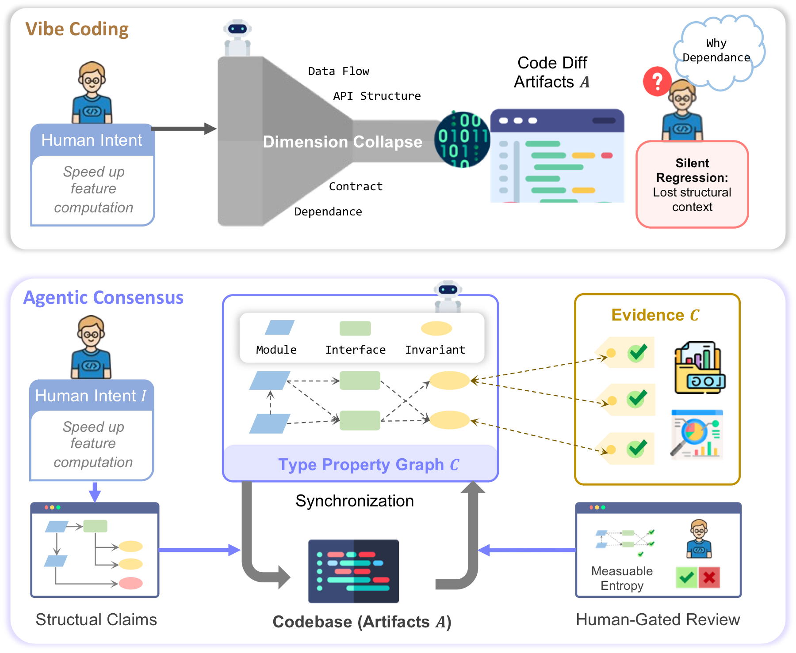
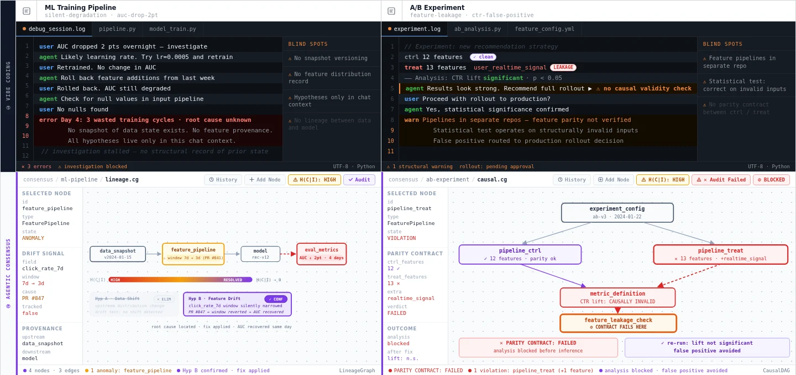
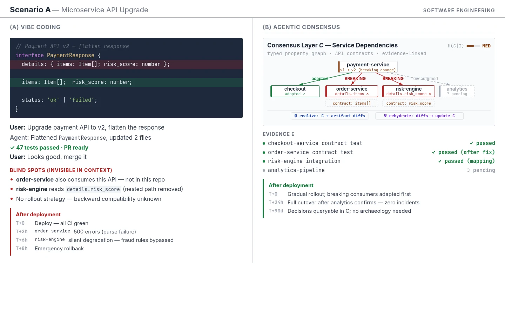
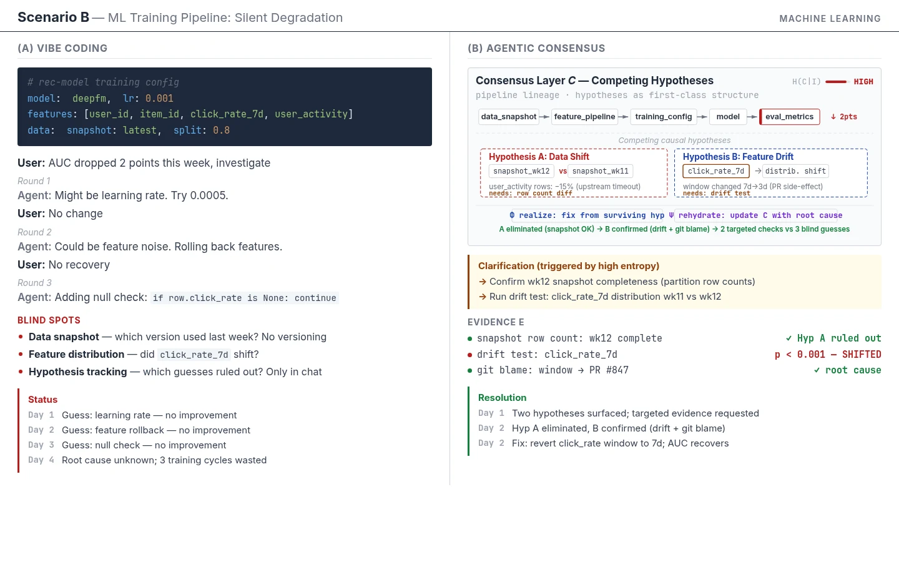
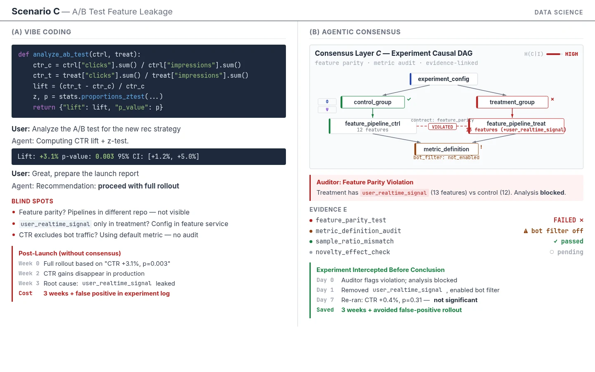

Intent becomes structure
Partial human intent is encoded into typed claims about modules, data, contracts, and invariants.
Working paper · 2026
1HKUST (GZ) 2Zhejiang University 3USTC 4Tencent
Agentic Consensus reframes AI-assisted software engineering around a governable layer C: a typed, auditable world model that keeps intent, executable artifacts, and evidence in correspondence.

Thesis
Vibe coding can produce executable code quickly, but it leaves structural commitments implicit. As agent throughput scales, reviewers need a primary artifact that records assumptions, dependencies, invariants, and evidence before they approve changes.
Abstract
Vibe coding produces correct, executable code at speed, but leaves no record of the structural commitments, dependencies, or evidence behind it. This is not a generation failure but a control failure: code plus chat history performs dimension collapse, flattening complex system topology into low-dimensional text. Agentic Consensus proposes the consensus layer C as an operable world model represented as a typed property graph. Executable artifacts are derived from C and kept in correspondence via Phi and Psi synchronization operators, while evidence links directly to structural claims so commitments become auditable.
Consensus layer C
C is not documentation after the fact. It is the coordination surface where humans and agents negotiate structure, realize artifacts, rehydrate changes, and attach validation evidence.
Partial human intent is encoded into typed claims about modules, data, contracts, and invariants.
Phi realizes consensus changes into code, configuration, dataflows, and other executable artifacts.
Tests, traces, provenance, and validation jobs link to the specific structural commitments they support.
Psi rehydrates artifact changes back into C, making structural drift and uncertainty visible.
Case studies
The paper contrasts vibe coding with Agentic Consensus in ML training degradation and A/B experiment leakage. Both failures are structural, not generative.




Evaluation framework
Does C make intent explicit at the right abstraction level and help reviewers predict downstream consequences?
How much structural ambiguity remains given current intent, and when should execution switch to clarification?
How many human corrections are needed to reach a correct consensus state compared with chat-driven baselines?
Do humans understand systems faster through C than by reading raw code, configs, and chat history?
Resources
Use the PDF for the submitted paper, the repository for source and updates, and llms.txt for structured project context that AI research assistants can parse directly.
@misc{wang2026agenticconsensus,
title = {Scaling Human-AI Coding Collaboration Requires a Governable Consensus Layer},
author = {Wang, Tianfu and Hao, Zhezheng and Wu, Yin and Wu, Wei and Lin, Qiang and Dong, Hande and Yuan, Nicholas Jing and Xiong, Hui},
year = {2026},
note = {Working paper}
}FAQ
It is a proposed paradigm where a governable consensus layer C becomes the primary artifact of AI-assisted engineering.
It addresses the representation gap created when generated code passes tests but hides assumptions, dependencies, and evidence.
C is modeled as a typed property graph with synchronized projections, evidence links, and round-trip artifact correspondence.